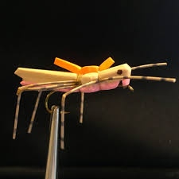

 With the warm weather there are an abundance of incects that are hatching. From caddis to mayflies to hoppers, summer is a dryfly fishermans favorite time of the year. One of the most productive times is during the grasshopper hatch which happens around August in Montana. Trout love a large easy meal and hoppers fit the bill. There is nothing like a 20 inch bronwn trout wacking a hopper as it floats down stream.